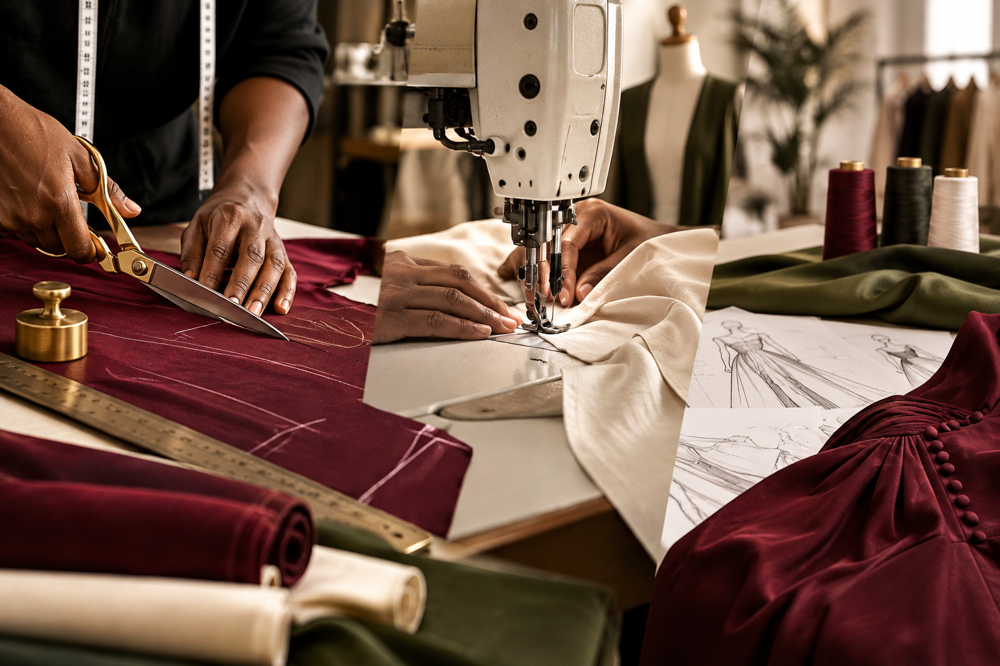
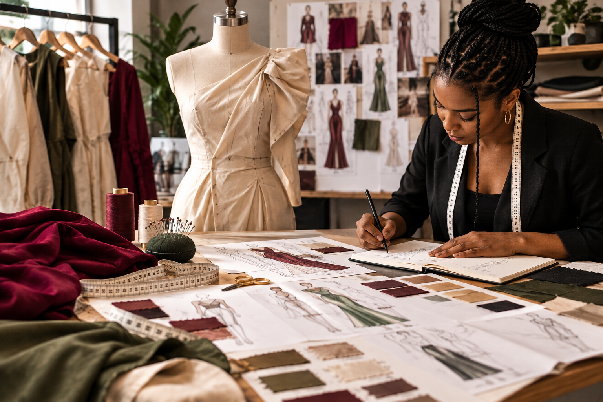
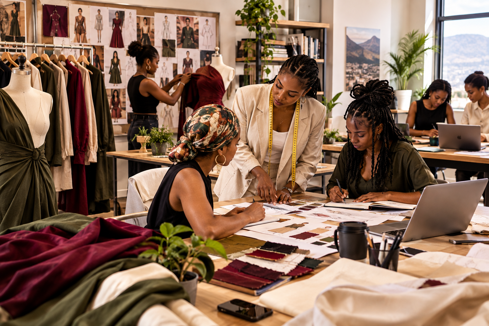
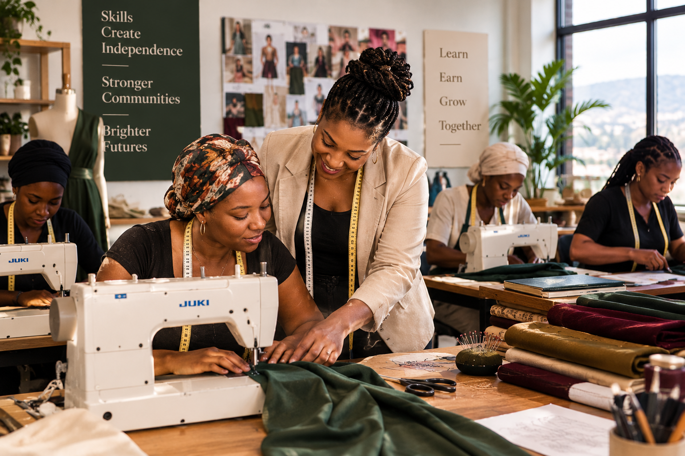
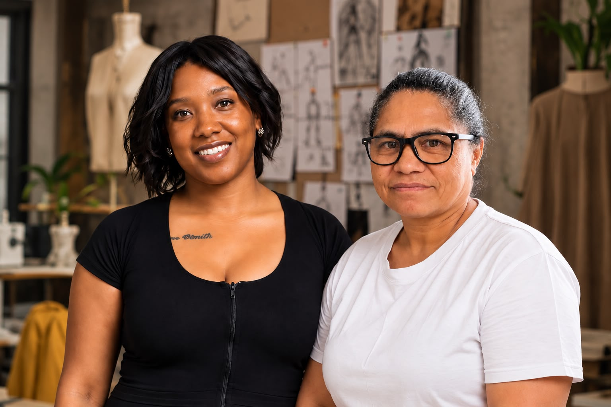
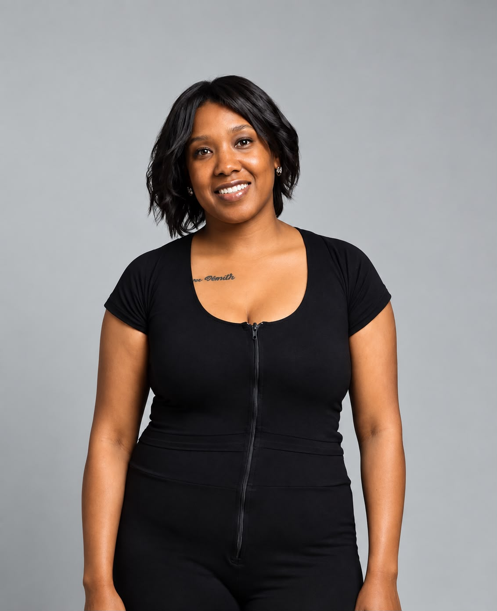
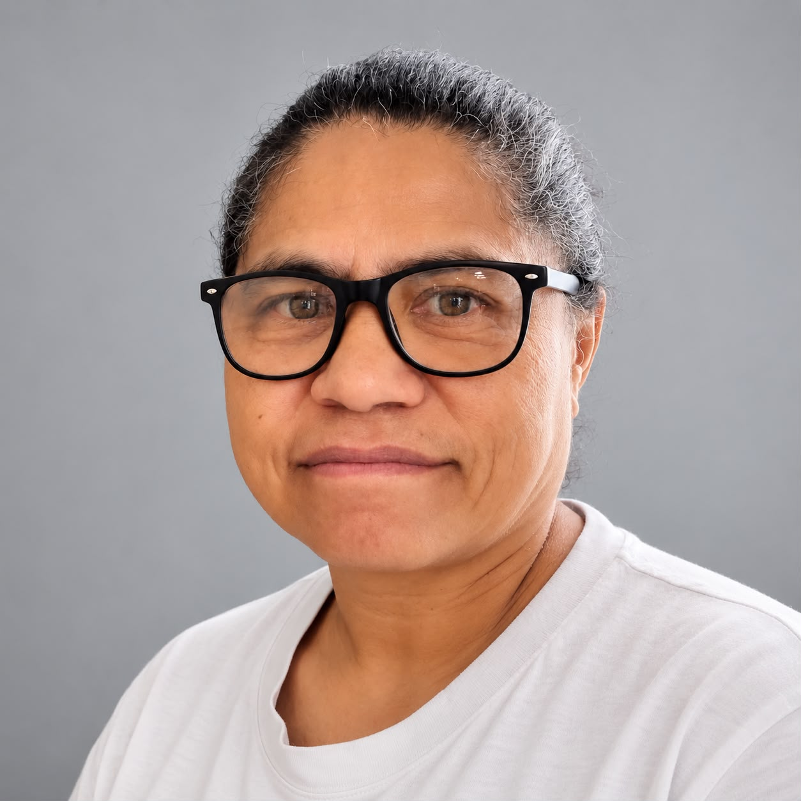

CMT Manufacturing
Cut. Make. Trim.
Professional garment manufacturing for designers and brands looking for reliable, high-quality local production.
Knot & Cross Collective helps fashion designers and clothing brands turn ideas into professionally constructed garments through premium CMT manufacturing, fashion design, sampling and pattern development.

From concept to production, we provide the services and support designers need to bring their collections to life.
Cut. Make. Trim.
Professional garment manufacturing for designers and brands looking for reliable, high-quality local production.

From idea to sample. Design development, pattern creation, sampling and garment construction for independent designers and commercial lines.
Develop my design →
A creative community space to showcase collections, use physical facilities and work with our CMT team to build your fashion brand.
Explore incubation →
Sewing, pattern-making and garment-production training designed to empower local women with practical, self-sustaining trade skills.
Learn more →From occasion wear and formal dresses to contemporary fashion and children's wear, our work showcases the possibilities of design, construction and craftsmanship.
Create with us →
Our story began many years ago when our paths first crossed as young dreamers with a shared passion for fashion and design. Though life took us on different journeys, our paths crossed again four years ago to fulfil a lifelong dream.
Fueled by an enduring dream, we embarked on a rigorous three-year journey — working full-time jobs while studying fashion design part-time.
Now, as proud graduates, we are proof that it is never too late to pursue your purpose. As independent women, we have poured our hearts, professional expertise and technical design skills into creating a business that doesn't just make beautiful clothes, but changes lives.

A fashion design graduate bringing design development, garment construction and creative problem-solving into the collective's work.

A fashion design graduate combining technical construction, creative expertise and a commitment to practical skills development.
Access space, support, community and production capability as you develop your fashion brand.
Our incubation platform is designed for upcoming designers — young and old — who need more than inspiration. We connect creative ideas to practical resources, physical facilities and a CMT team that can help turn designs into samples and production-ready garments.
Showcase. Present your collections and build visibility.
Access. Use shared physical facilities to work and develop.
Develop. Get pattern grading, sample assembly and construction support.
Produce. Move from concepts towards CMT manufacturing as your brand grows.
Meet designers, makers and people with complementary skills.
Develop ideas into patterns, samples and finished pieces.
Build practical knowledge around design and garment production.
Use the collective as your needs evolve from concept to collection.
Our mission extends beyond the garments we make. We aim to actively transform Ocean View by teaching local women, including single mothers, practical skills that can become a foundation for earning, supporting families and building confidence.
We believe empowerment works best when people leave with something they can use: a skill, a pattern, a finished garment, a production capability or a pathway into further work.
To build a thriving, self-sustaining fashion hub in the South Peninsula bridging premium manufacturing and community empowerment.
To deliver exceptional CMT and design services while actively transforming Ocean View through practical skills.
Connect established designers, emerging talent and local women through shared facilities, knowledge and opportunity.
Quality creates trust. Skills create choices. Community creates lasting impact.
Tell us about your project and we'll get back to you to discuss your requirements and the next steps.
Share a little about your project and we'll get back to you.
For quick enquiries, send a message directly and let's talk about your project.
Chat with us →